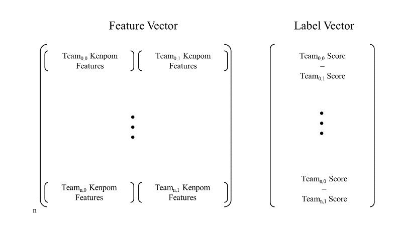

About
The chances of guessing a perfect March Madness Tournament Bracket are about 1 in 9.2 quintillion, it has never been
done in the history of the game and with those odds, it's not likely to happen anytime soon. The NCAA Men's Basketball
Tournament is composed of the top 64 teams going head to head, single elimination playoff style with the final
two teams playing in a championship game where winner takes all. Every year, millions of people submit their
prediction brackets (containing every single game), hoping to guess correctly and ultimately win a prize. This
project takes aim at increasing those chances of choosing a Perfect Bracket by combining different sets of College
Basketball data, dating back to the early 2000's. There have been many attempts at creating a model that will
correctly predict the tournament results, listed below are a few references to previous projects:
How it works
Fig 1
 Fig 2
Fig 2

Fig 3
Fig 4
The raw tournament game data was formatted with game statistics shown in Fig. 1. The raw data was processed
and formatted into a feature vector and label vector as shown in Fig. 2. The data processing step consist of
looking up the Kenpom team statistics for the given season and Team ID as the key. Two methods were tested for
feature vector correlation. The first feature vector consisted of 10 features, 9 features being the difference
between the 9 Kenpom team features of the two teams playing, and 1 for game location (+1/0/-1) corresponding
to Home, Neutral, Away for the first team. The second feature vector consisted of 19 features, 18 features being
the concatenation of the 9 Kenpom team features for the two teams playing. The label vector for each feature
row was either a +1 or -1 corresponding to if the first team in the matchup order, won or lost. The point spread
(difference) between the two teams is inserted into the label vector. This effectively classifies + point spreads
as the Teami,0 winning and - point spread as Teami,1 winning for a given game i. The completed feature vector
and label vector are split into training using data tournament games from 2002-2017. 2018 is left for testing
data. Two machine learning models were used. The first was Perceptron, this allowed for classification of Teami,0
either winning or losing. However, a secondary goal of the project was to predict the point spread. The perceptron
model will not work for this goal. Linear Regression was implemented to help reach this goal. The perceptron
was the default perceptron class from the Python SciKit Learn library, however, the maximum iterations were limited
to 100,000, an alpha value of .0001, and the data was centered to the intercept. Since the data size for training
was roughly 1,000 games, the step size and max iterations were decided to be correlated to this size. Linear
Regression using least squares also came from SciKit Learn, the intercept was also fit. The linear regression
model is trained using training data. The first-round tournament games from 2018 are then predicted using a model.
The winner is chosen using the sign of the point spread, and that team is added to the next round of the tournament.
Teams that moved on are paired up and a new feature vector is created for the two teams. A prediction is computed,
teams are chosen to move to the next round and this process continues until only 1 team remains. This entire
process is shown in Fig. 4